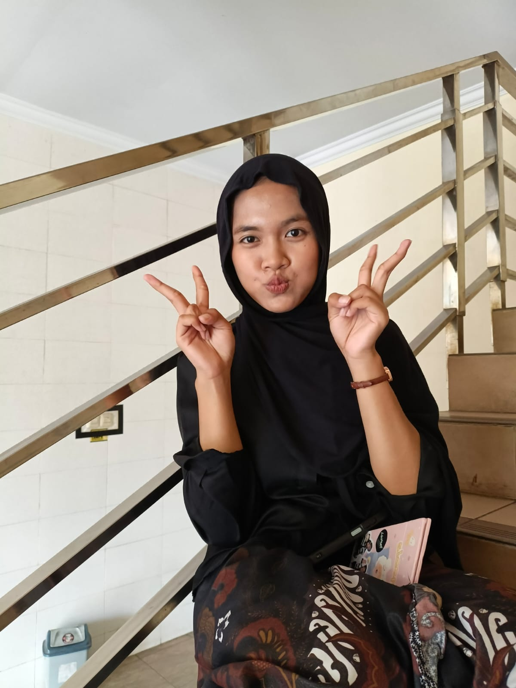

Special Gift
To Someone Special In My Life ✨
💟 Our Memories



Have a wonderful day! You're always amazing.
I LOVE YOU
❤️
To Someone Special In My Life ✨

Have a wonderful day! You're always amazing.